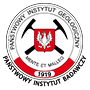
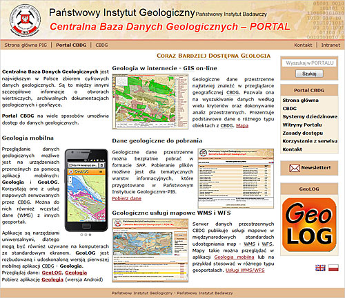

Polish Geological Institute National Research Institute
Central Geological Database
more and more available geology
About the CBDG
Maintained and developed by the Polish Geological Institute – National Research Institute, the CBDG remains the largest collection of digital data on Earth sciences in Poland. It is aimed at gathering and sharing information on geology and related sciences to support geological authorities, the Department of Geology and Geological Concessions in the Ministry of the Environment, the National Geological Survey, universities and other academic centres as well as geological enterprises and companies.
The CBDG is supervised by Department of Maintaining Information Systems of the Institute, responsible for the continuous update and development of the database, which includes adding data as well as creating new subsystems.
Employees supervising the CBDG:
- mgr Marek Adamski
- mgr Iwona Duliban
- mgr Sylwia Gąsińska
- inż. Marcin Gołębiewski
- dr inż. Piotr Gut
- mgr Renata Karoń-Słomczyńska
- mgr Jarosław Kmita
- mgr Magdalena Langner
- mgr Tomasz Liszewski
- mgr Ewa Machalska
- mgr Radosław Markiewicz
- mgr Wojciech Paciura
- mgr Izabella Sadowa
- mgr inż. Dorota Siewruk-Wróblewska
- mgr Dominik Stańczuk
- mgr Milena Staros
Free data access
History
In 1993, the Ministry of Protection of Environment, Natural Resources and Forestry (now: the Ministry of the Environment) launched an initiative to create the Central Geological Database (CBDG).
Preliminary works on the database design started in the Research Computerization Unit of the Polish Geological Institute in 1994. Records of the British Geological Survey database were used as tutorial materials for presenting the methodology of works and feasible solutions. Another step, facilitated by access to the GEODE database model that was developed by the Council for Geoscience (the Republic of South Africa), involved preparing the database structure adapted to Polish standards and needs.
As the Oracle CASE methodology and the Oracle database management system were used to design and support the database, the consultants at Oracle Poland assisted in analytical and designing processes. The survey conducted among prospect users of the database as part of strategic analysis revealed their enormous expectations: the database was to contain all possible geological data, including non-digital data, as well as to be equipped with highly advanced functionalities. Clearly, the most important was to enable the users of the application to enter, search and browse data. Special surveys carried out both inside and outside the Institute revealed further, more detailed expectations of prospect users. All thematic databases developed by the Institute as well as some databases of external institutions were thoroughly analysed.
Responsible for the further development of the database, the CBDG Unit in the Central Geological Archives was founded in 1996. In 1997, two-year in-depth analyses, designing processes and programming led to the implementation of a production version of the CBDG, which contained the main subsystems: Boreholes, Documents, Analyses and Mineral Deposits as well as the spatial data subsystem (GIS) and special applications (tabular, profile and geographic viewers). The database was already equipped with the major geological vocabularies, used to enter and search data.
In the following years, new versions of the implemented CBDG subsystems were regularly developed and refined. Also, other subsystems were added to the database: Geological Collections (where available digital catalogue data obtained from the Museum of the Institute were transferred), Well-log Data (where data from the GEOFLOG thematic database were transferred) and Survey Sites (where data on the location of observation points and surface measurements can be stored). Additionally, the Drill Cores subsystem was prepared.
The CBDG vocabularies and functional guidelines of particular subsystems were also prepared by other Institute employees, who worked in groups on particular issues and supported the CBDG team with indispensable geological specifications. In addition, some of the CBDG vocabularies involved collaboration with geologists not employed in the Institute.
People developing the CBDG between 1996 and 2008
- Marek Adamski
- Maciej Bojanowski
- Jacek Chełmiński
- Iwona Duliban
- Marcin Gołębiewski
- Magdalena Jakóbczak
- Magdalena Kowalska
- Krystyna Kupiszak
- Tomasz Liszewski
- Ewa Machalska
- Tomasz Mardal
- Radosław Markiewicz
- Stefan Młynarski
- Wojciech Paciura
- Jerzy Piotrowski
- Izabella Sadowa
- Anna Sienkiewicz
- Dominik Stańczuk
- Agnieszka Stańczyk
- Justyna Sylwestrzak
Free data access
Financing
The Ministry of the Environment contracts the Polish Geological Institute to maintain and develop the Central Geological Database, which is financed by the National Fund for Environment Protection and Water Management.
Free data access
Future
The Central Geological Database will exist and expand, with its first priority to obtain new resource data and improve their quality. Data from older thematic databases will be continually transferred to the CBDG, which will further integrate with thematic databases still in use. With its expansion, the database will offer an opportunity to browse scans of documentation, maps, graphic attachments, etc. The scope of the CBDG data publicly available on the Internet according to binding legal regulations will be steadily increasing. International systems of geological information will continue to be designed and drawn up in relation to the CBDG.
The database expansion will involve implementing modern information technologies as well as developing a specialised software application used for data processing, including efficient ways of data visualisation.
geoportal.pgi.gov.plFree data access
Posters
Posters made for the Second Polish Geological Congress showing the information about the different groups of information from the Central Geological Database.


 geoportal.pgi.gov.pl
geoportal.pgi.gov.pl
Free data access